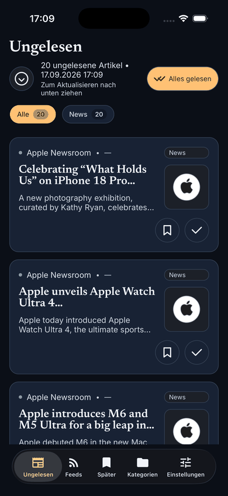

Reporter
Reporter
Reporter
Your feeds. Your device. No tracking.
A local RSS feed reader as an app for your iPhone. Reporter gives you one central place to subscribe to RSS and Atom feeds, read articles and save posts for later.

What is Reporter?
Reporter is a local RSS/Atom feed reader for iOS. The app brings all your subscribed feeds together in one place: new articles show up under Unread, saved posts under Later, and the five tabs Unread, Feeds, Later, Categories, Settings keep everything within reach. Article text that has already been synced stays readable even without an internet connection.
Reporter works without its own backend, without a user account, without telemetry, without tracking and without advertising — all data stays exclusively on your device. It is built for people who want to choose their own news sources and keep their data to themselves.
Features
- Clear sections Five tabs at the bottom of the screen — Unread, Feeds, Later, Categories and Settings — take you straight where you want to go.
- RSS/Atom feed sync Supports all common feed formats (RSS and Atom) — with a per-feed status display and sync log.
- Find feeds easily Enter a website address and pick from the feeds that site offers — no need to know the exact feed URL. Or enter a feed URL directly. Manage feeds from the context menu on the Feeds page.
- Article detail view Read articles right in the app — whatever the feed provides, often just a teaser; the original post opens in the system browser at a tap. Plus automatic read marking, “Save for later” and sharing.
- Filters and sorting Category filters, a keyword blacklist applied during feed sync and a configurable sort order for unread articles.
- Background refresh & notifications Automatic refresh (in-app timer; on iOS additionally the OS background fetch) and local iOS notifications with quiet hours.
- Offline reading Synced article text stays readable without an internet connection; original posts, links and images need a network. All data stays on your device; on iOS your subscriptions, categories and settings are included in the iCloud backup while article content is fetched again automatically after a restore.
- Thoughtful design Light/dark theme, localized UI (German/English), thorough accessibility and a design system with its own app icon — a demo feed greets you on first launch.
Screenshots & demo
Note: the screenshots and demo below currently show the app's German user interface — an English UI is included.



Download
Reporter is currently being prepared for the App Store. Until it ships, you can find all downloads and release notes on the GitHub releases page.
Support & contact
Questions, bugs or feature requests? Reach out via email at mstromberg84+reporter@gmail.com or through the project's GitHub Issues.
Reporter is developed by Martin Stromberg — with AI assistance (Devin, Cognition) for implementation and documentation. The app is licensed under the PolyForm Noncommercial License 1.0.0 — noncommercial use is free; for commercial use there is a separate commercial license.